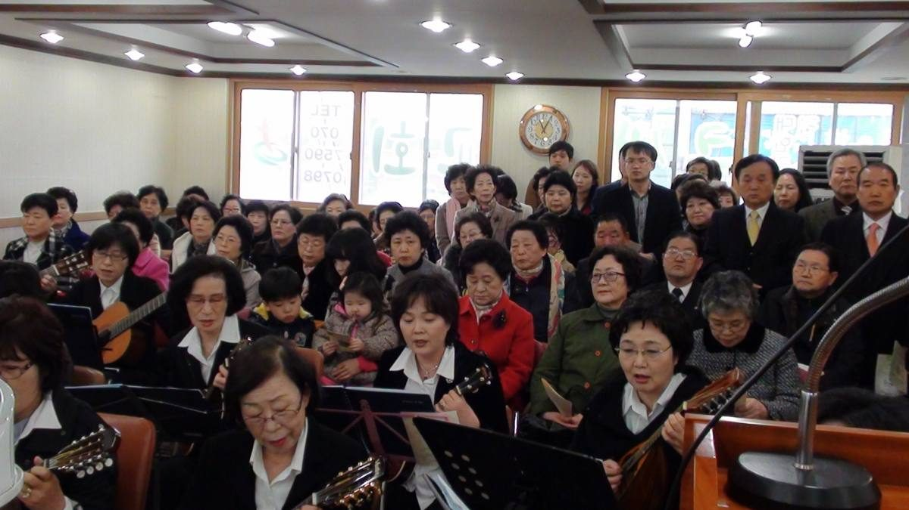
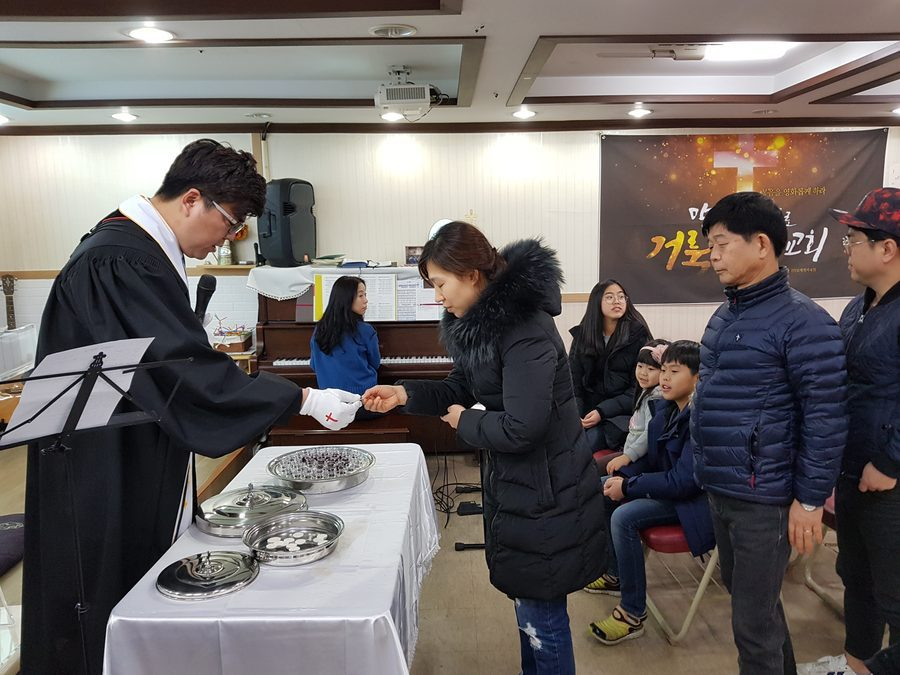
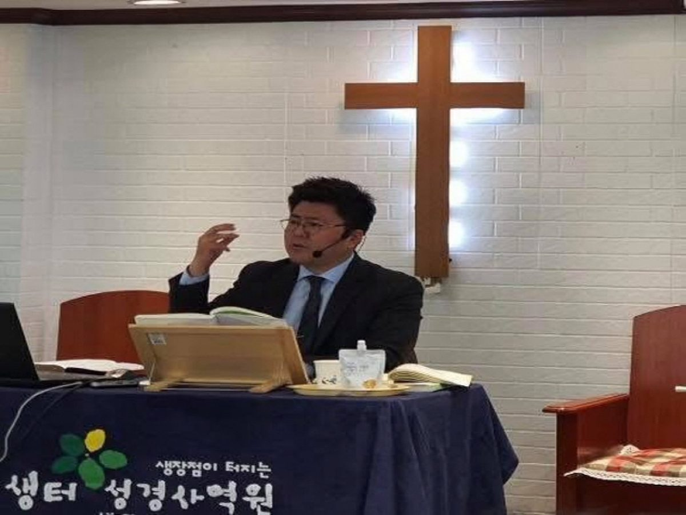

01

주일예배오전 11시성경공부주일 오후 1시아침예배오전 7시
성경 아카데미
말씀을 읽고 배우고 가르치자
02
배우기
03
가르치기
예배안내
예배 시간표
주일예배
오전 11시성경공부
주일 오후 1시아침예배
오전 7시아침 QT 예배

교회소개
함께 걷는
믿음의 가족

말씀과 기도로 세워진 이 공동체는 예수 그리스도의 사랑을 삶으로 실천하며, 지역사회와 열방을 섬기고자 세워졌습니다.
우리는 성경 중심의 제자훈련과 깊이 있는 말씀 연구를 통해, 성도 한 사람 한 사람이 하나님의 말씀 위에 굳건히 서도록 돕고 있습니다. 말씀 안에 뿌리내린 한 사람이 변화될 때, 가정과 교회, 세상 가운데 하나님의 나라가 확장된다고 믿기 때문입니다.
큰샘교회는 단순한 예배의 공간을 넘어, 삶의 모든 자리에서 복음을 살아내는 ‘살아있는 교회’가 되기를 소망합니다. 가정과 일터, 선교지에서 하나님의 뜻을 이루어가는 이 거룩한 여정에 여러분을 초대합니다.
이번 주 큰샘교회
매주 갱신됩니다
주일 설교
광야에서도 신실하신 하나님
2026-09-27 · 민수기 14장 8-9절설교 영상 보기 ↗ 온라인 주보2026년 9월 27일 주보
이번 주 예배 순서와 소식주보 보기 ↗ 아침예배아침 QT 예배
매일 아침 7시 말씀묵상으로 하루를 엽니다예배 참여하기 ↗성경 아카데미
어? 성경이 읽어지네
이애실 사모 강의
애실쌤과 365성경읽기 · 생터성경사역원
오늘의 통독 —272일차오늘 읽을 곳 —욥기 38-39장
272 / 365

온라인 예배
최근 설교
광야에서도 신실하신 하나님
설교 영상 보기 ↗다시 하나님 앞으로
· 레위기 16장 30절설교 영상 보기 ↗구원하시고 함께 하시는 하나님
· 출애굽기 6장 6-7절설교 영상 보기 ↗큰샘교회